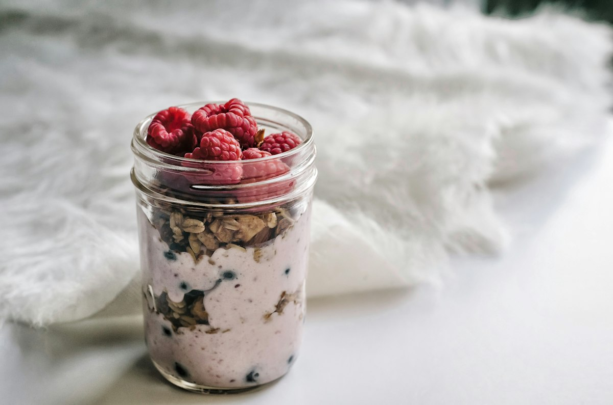

Honey Yogurt Parfait
Layers of thick honeyed yogurt, macerated fruit and crunchy granola, assembled in five minutes.

A parfait is only as good as its contrast, which means the granola has to stay crunchy and the fruit has to be juicy. Macerating the berries with a little sugar and lemon creates a syrup that runs down between the layers.
Ingredients
Quantities scale automatically. Cooking times stay the same.
Honeyed yogurt
Macerated fruit
Layers
Equipment
- 4 tall glasses
- Small bowl
Method
-
1
Macerate the fruit
Toss the fruit with the sugar and lemon juice and leave for 10 minutes. It will release a light syrup, which is the point.
-
2
Sweeten the yogurt
Stir the yogurt with the honey, vanilla and lemon zest until smooth and glossy.
-
3
First layer
Spoon a layer of yogurt into the base of each glass, then add granola. Yogurt first protects the glass bottom from going soggy.
-
4
Add fruit
Spoon over some macerated fruit with a little of its syrup, letting it run down the sides of the glass.
-
5
Repeat
Repeat the layers once more, finishing with yogurt so the top layer is clean and pale.
-
6
Top and serve
Crown with the remaining fruit, a scatter of granola and almonds, a drizzle of honey and a mint leaf. Serve within fifteen minutes.
Cook’s tips
- Assemble within fifteen minutes of serving. Granola sitting in yogurt turns soft very quickly.
- Keep the last granola for the top so there is always something crunchy in the first spoonful.
- Use thick strained yogurt; runny yogurt will not hold distinct layers.
Variations
- Layer with lemon curd or a spoon of berry compote for a richer dessert.
- Use coconut yogurt and maple syrup for a vegan version.
- Add crushed amaretti biscuits instead of granola for something closer to a trifle.
Storage and make-ahead
Meant to be assembled fresh. The honeyed yogurt keeps 4 days and the macerated fruit 2 days, both stored separately.
Nutrition per serving
| Calories | 328 kcal |
|---|---|
| Protein | 18 g |
| Carbohydrates | 42 g |
| Fat | 11 g |
| Fibre | 4 g |
| Sugar | 30 g |
| Sodium | 110 mg |
Nutrition is estimated from ingredient averages and will vary with brands and portioning.